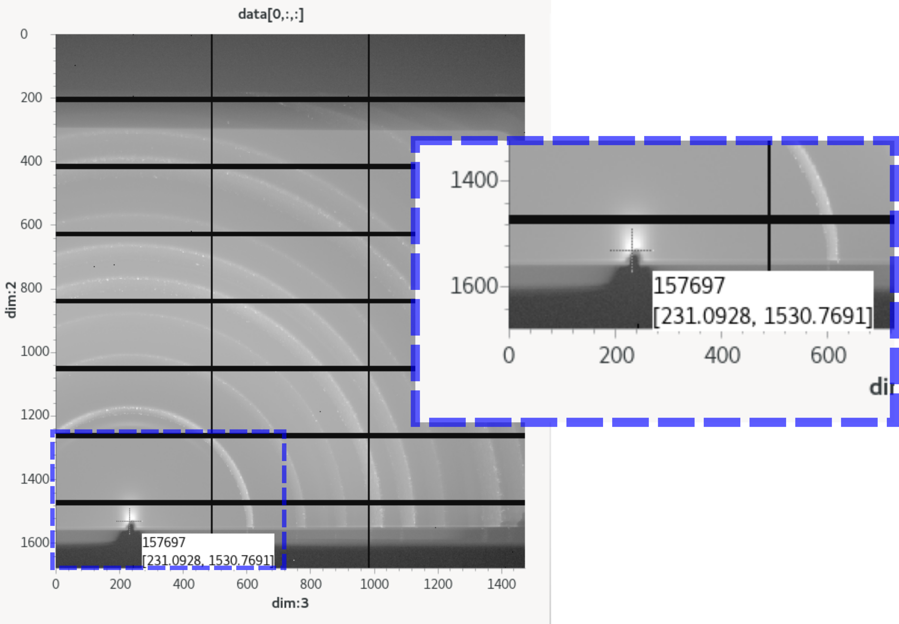
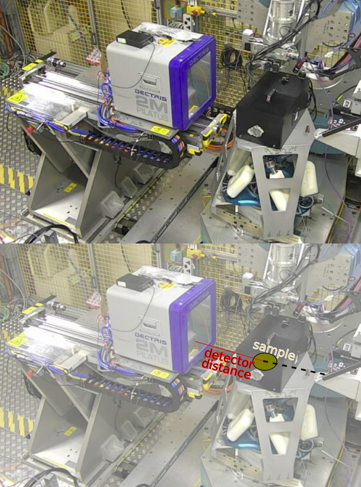

Walkthrough 1 - Minimum settings needed in the experiment setup file
For all processing jobs the minimum required information in the experimental setup file is the following:
Data paths
Geometry
Processing options
Data paths
The first details to include in the setup file are where the data is currently saved, and where you would like to output the processed results. This information is stored in the following two variables:
- local_data_path
Set this to the directory path where your files are saved, note you will need to include any subdirectories in this path e.g /dls/i07/data/2025/si36456-5/sample1
- local_output_path
Set this to the path where you want the output from the data processing to be saved e.g. /dls/i07/data/2025/si36456-5/processing/sample1
Geometry
The next step is to include details on the geometry of the setup, which are stored in the following variables:
- setup
How was your sample mounted? Options are ‘horizontal’, ‘vertical’ and ‘DCD’.
from Schleputz 2011 paper
{kind=link}
{kind=link}
{kind=link}
- experimental_hutch
which experimental hutch was used 1= experimental hutch 1, 2=experimental hutch 2
- beam_centre
The beam centre, as can be read out from GDA, in pixel_x, pixel_y. e.g. (231,1531)

- detector_distance
The distance between the sample and the detector (or, if using the DCD, the distance between the receiving slit and the detector). Units of meters.

Processing options
- process_outputs
define what outputs you would like from the processing in a list e.g. [‘pyfai_ivsq’]. The options available are:
full_reciprocal_map: calculates a full reciprocal space map combining all scans listed into a single volume. Use this option for scan such as crystal truncation rod scans, fractional order rod scans, or in-plane HK scans.
pyfai_qmap: calculates 2d q_parallel Vs q_perpendicular plots using pyFAI.
pyfai_ivsq: calculates 1d Intensity Vs Q using pyFAI.
pyfai_exitangles: calculates a 2d map of horizontal exit angle Vs vertical exit angle
Note
pyFAI latest version has grazing incidence options, however chi angle may not be true chi. Currently ok for qualitative comparisons.
pyfai_ivschi: calculates 1d Intensity Vs Chi using pyFAI.
pyfai_chimap: calculates 2d Chi Vs Q_total using pyFAI.
- map_per_image
this option will set whether to combine all scans into a single output:
map_per_image=False -> gives a single output file (either HKL volume or mapped GIWAXS data)
map_per_image=True -> analyses each image individually creating multiple output files (either HKL volumes or mapped GIWAXS)
Minimum example
Putting everything together into an example exp_setup.py file gives the following:
local_data_path = '/dls/i07/data/2025/si36456-5/sample1' # '/dls/i07/data/2024/##experiment-number##/##subfolder#
local_output_path = '/dls/i07/data/2025/si36456-5/processing/sample1' # '/dls/i07/data/2024/##experiment-number##/processing'
setup = 'horizontal'
experimental_hutch = 1
beam_centre = (119, 1564)
detector_distance = 0.18
process_outputs = ['pyfai_qmap']
map_per_image = False
# copied from /dls_sw/apps/fast_rsm/v2.2.0/fast_rsm/CLI/i07/example_exp_setup.py
#===================================================================
#======Information required for all scan types======
#===================================================================
# How was your sample mounted? Options are 'horizontal', 'vertical' and 'DCD'.
setup = 'horizontal'
# which experimental hutch was used 1= experimental hutch 1,
# 2=experimental hutch 2
experimental_hutch = 1
# Set this to the directory path where your files are saved, note you will
# need to include any subdirectories in this path
local_data_path = '/dls/i07/data/2025/si36456-5/sample1' # '/dls/i07/data/2024/##experiment-number##/##subfolder#
# Set this to the path where you want the output from the data processing
# to be saved
local_output_path = '/dls/i07/data/2025/si36456-5/processing/sample1' # '/dls/i07/data/2024/##experiment-number##/processing'
# The beam centre, as can be read out from GDA, in pixel_x, pixel_y.
beam_centre = (119, 1564)
# The distance between the sample and the detector (or, if using the DCD, the
# distance between the receiving slit and the detector). Units of meters.
detector_distance = 0.18
# define what outputs you would like form the processing here, choose from:
# 'full_reciprocal_map' = calculates a full reciprocal space map combining all
# scans listed into a single volume
#
# 'pyfai_qmap' = calculates 2d q_parallel Vs q_perpendicular plots using pyFAI
#
# 'pyfai_ivsq' = calculates 1d Intensity Vs Q using pyFAI
#
# 'pyfai_exitangles' - calculates a map of vertical exit angle Vs horizontal exit angle
# 'pyfai_ivsq' , 'pyfai_qmap','pyfai_exitangles' ,'full_reciprocal_map'
process_outputs = ['pyfai_qmap']
# Set this to True if you would like each image to be mapped independently.
# If this is False, all images in all scans will be combined into one large
# reciprocal space map.
map_per_image = False